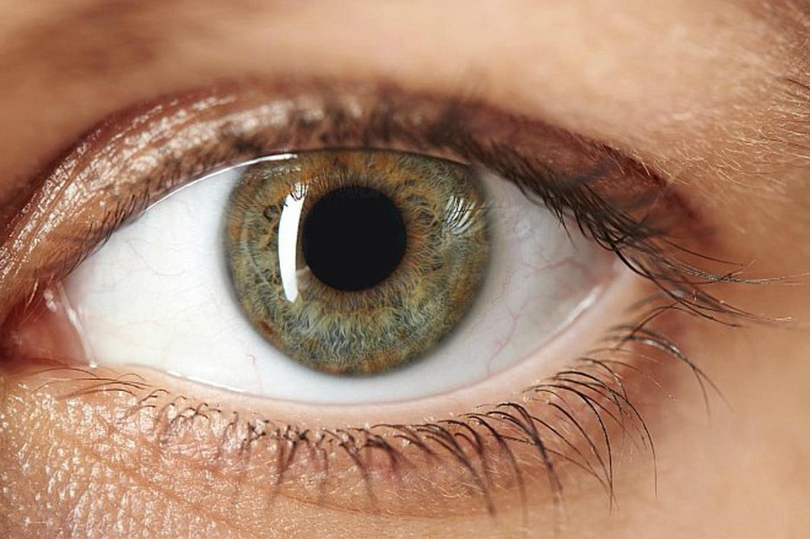

El sentido de la vista es la visión que ocurre cuando la luz es procesada por el ojo e interpretada por el cerebro.
La luz pasa a través de la superficie transparente del ojo (la córnea). La pupila, que es la abertura negra en la parte anterior del ojo, es un orificio hacia el interior de éste.
